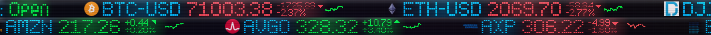
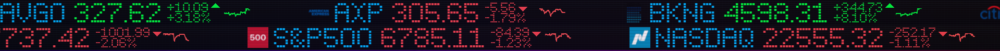

A customizable, always-on-top stock and cryptocurrency ticker for Microsoft Windows.
Real-time prices. Beautiful LED effects. Zero clutter.
TCKR sits at the top of your screen, always visible, never in the way.
Live stock quotes via Finnhub WebSocket streaming with REST fallback. Crypto prices powered by CoinGecko.
Dock the ticker to any display. Choose exactly which monitor shows your prices — even run a second, independent ticker bar.
Adjust scroll speed, height, transparency, indicator styles, and visual effects. Make it yours.
Bloom glow, motion blur, LED matrix overlay, glass cover with glare — a retro-modern look you can fine-tune.
Toggleable 1-day or 5-day mini trend charts next to each symbol. See the bigger picture at a glance.
Runs quietly in your system tray. Right-click for quick access to settings, stock management, and more.
A sleek ticker bar that blends right into your desktop.

Dual ticker with LED bloom
Clean look without bloomNo complicated setup. Just download, add your free API key, and go.
Grab the latest release from GitHub. Single executable — no install needed.
Add tickers like AAPL, MSFT, BTC — or pass them as command-line arguments.
Free, open-source, and built for Windows.
Download TCKR